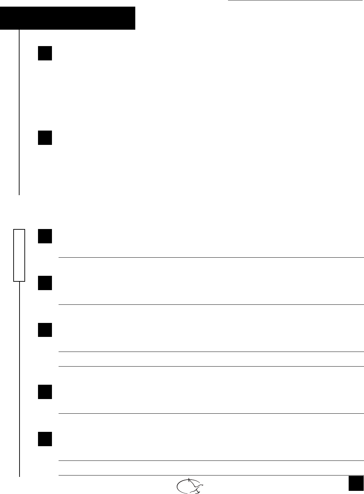

Éditions « À Reproduire » Internet : www.envolee.com
Question de textes 4
7
Nom
Mona veut un chien
4 Que veut dire la mère de Mona quand elle dit : « C’est beaucoup de travail, avoir un chien » ?
a) Mona doit faire plus de recherche avant d’être prête à avoir un chien.
b) Les chiens travaillent fort afi n d’être de bons animaux de compagnie pour les gens.
c) Les chiens ont besoin de nourriture et d’exercice. Il faut aussi ramasser leurs dégâts.
d) Mona devra se reposer plus si elle a un chien.
5 Comment Mona a-t-elle acquis autant de connaissances sur les chiens ?
a) En écoutant son enseignante à l’école.
b) En visitant un site Web.
c) En écrivant à la Société protectrice des animaux.
d) En regardant une vidéo sur les chiens.
6 Pourquoi Mona veut-elle un Jack Russell ?
7 Que devra faire Mona même si elle est fatiguée ou qu’il pleut ?
8 Décris physiquement le chien que Mona veut choisir.
9 Quand fait-elle ses recherches sur le Web ?
10 Que contient le site Web préféré de Mona ? Nomme deux éléments.
REPÉRAGE